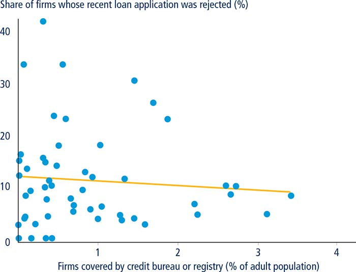

Getting Credit: Credit Information
Casting a wide net to expand financial inclusion
The ability to access affordable credit is a critical element of private sector-led growth. While factors such as interest rates and collateral requirements play an important role in access to finance for firms and individuals, underdeveloped financial infrastructure increases the cost and risk of lending to both borrowers and financial services providers. A comprehensive credit reporting system that includes credit history data not only from banks but from other institutions—such as trade creditors, leasing and factoring companies, retailers and utilities and microfinance institutions—is critical in the establishment of a well-developed and inclusive financial infrastructure.1 This can be of special importance for developing economies where lower levels of institutional development—reflected in weak judicial systems and creditor rights—are associated with greater financing constraints and less developed credit markets.2
▪ A comprehensive credit reporting system that includes credit history data from alternative sources—in addition to banks—is critical to theestablishment of a well-developed and inclusive financial infrastructure.
▪ In economies where credit bureaus or registries include data from retailers, utility companies and trade creditors, the average coverage of the credit reporting system tends to be higher than in those where such information is not available.
▪ OECD high-income economies and Latin America and the Caribbean have the largest proportion of economies where the main credit reporting service provider distributes data from non-regulated entities.
▪ In 50 out of 190 economies measured by Doing Business the main credit reporting service provider distributes data from utility companies in its reports. At least one credit reporting service provider reports repayment history from financing corporations or leasing companies in 110 economies worldwide.
▪ Reporting microfinance data benefits borrowers (by establishing repayment histories that help them obtain loans) and microloan lenders (by helping them assess the repayment capacity of their clients).
Around 2.5 billion people currently lack access to formal financial services.3 Globally, 42% of adults reported having borrowed money in the previous 12 months in the 2014 Global Findex survey.4 Although the overall share of adults with a new loan—formal or informal—was fairly consistent across regions and economies, the source of new loans varied widely. In OECD high-income economies financial institutions were the main source of financing, with 18% of adults reporting borrowing from one in the past year. By contrast, in developing economies nearly a third (29%) of adults reported borrowing from family or friends, while only 9% reported borrowing from a financial institution. In the Middle East, South Asia and Sub-Saharan Africa more people reported borrowing from a store (using installment credit or buying on credit) than from a financial institution. The gap in the Middle East was the largest, with close to 20% of borrowers having a retail store credit and less than 10% having a loan from a financial institution.5
Access to finance is a fundamental factor affecting the growth opportunities of small businesses. Globally, 27% of firms identify access to finance as a major constraint.6 While a quarter of firms use banks to finance investments, only 15% of these firms’ total investments are financed by banks, with 71% of investments being financed internally, 5% by supplier credit and 5% by equity or stock sales.7 Compared to large firms, smaller firms finance a lesser share of their investment from formal sources, relying instead on informal sources such as borrowing from family and friends or from unregulated moneylenders.8 Around 70% of formal small and medium-size enterprises in developing economies are estimated to be either unserved or underserved by the formal financial sector.9 The total credit gap that they face amounts to $1.3 to $1.6 trillion, or $700 to $850 billion if firms in OECD high-income economies are excluded.10 A credit reporting system that accounts for the diverse sources of finance for small and medium-size firms can contribute to a reduction of the credit gap and the promotion of private sector growth.
EXPANDING CREDIT ACCESS THROUGH COMPREHENSIVE CREDIT REPORTING
Lenders and borrowers—both individuals and firms—benefit from sharing credit information with credit reporting service providers (CRSPs). In economies where a larger share of the adult population is covered by CRSPs, more adults have a credit card, borrow from a bank or other financial institution (figure 6.1) and formal private sector lending is higher (figure 6.2). This is consistent with earlier studies indicating that credit reporting institutions are associated with higher ratios of private credit to GDP across economies and that an improvement in information sharing increases credit levels over time.11 Higher economic growth rates and a lower likelihood of financial crisis are additional benefits associated with greater credit reporting.12 It is important to note that the figures presented here describe an association between variables measuring credit reporting systems and credit market outcomes. No causality is implied given the cross-economy nature of the data.
FIGURE 6.1 In economies where borrower coverage is higher, the share of adults with credit cards and borrowing from financial institutions is larger
Sources: Doing Business database; Global Findex database (http://www.worldbank.org/en/programs/globalfindex), World Bank.
Note: The samples include 106 and 130 economies covered by both Doing Business database and Global Findex database. Both relationships are significant at the 1% level after controlling for income per capita.
FIGURE 6.2 In economies where borrower coverage is higher, the levels of formal private sector lending are higher

Sources: Doing Business database; World Development Indicators database (http://data.worldbank.org/data-catalog/world-development-indicators), World Bank.
Note: The sample includes 129 economies covered by both the Doing Business database and World Development Indicators database. The relationship is significant at the 10% level after controlling for income per capita.
More firms tend to have bank loans or lines of credit (figure 6.3) and fewer rejections of loan applications (figure 6.4) in economies where credit bureaus and credit registries have higher commercial borrower coverage. This finding is consistent with recent analysis using firm-level surveys of 63 economies covering more than 75,000 firms over the period from 2002 to 2013. Its results reveal that the introduction of a credit bureau improves the firms’ likelihood of access to finance, with longer-term loans, lower interest rates and higher share of working capital financed by banks. The study also finds that the greater the coverage of the credit bureau and the scope and accessibility of the credit information, the more profound its impact is on firm financing.13
FIGURE 6.3 Higher borrower coverage is associated with higher percentage of firms with a bank loan/line of credit
Sources: Doing Business database; Enterprise Surveys database (http://www.enterprisesurveys.org), World Bank.
Note: The sample includes 138 economies covered by both Doing Business database and World Bank Enterprise Surveys database. The relationship is significant at the 5% level after controlling for income per capita.
FIGURE 6.4 Fewer loan applications are rejected when commercial borrower coverage is higher

Sources: Doing Business database; Enterprise Surveys database (http://www.enterprisesurveys.org), World Bank.
Note: The sample includes 53 economies covered by both Doing Business database and World Bank Enterprise Surveys database. The relationship is significant at the 10% level after controlling for income per capita.
By sharing credit information credit reporting helps to reduce information asymmetries between creditors and borrowers. Borrowers typically know their financial abilities and investment opportunities much better than lenders do. The inability of lenders to accurately assess the creditworthiness of borrowers contributes to higher default rates and smaller loan portfolios. Lenders are also more likely to lend to larger firms, which may be more transparent as a result of more elaborate legal and accounting rules and the regular publication of certified financial reports.
Credit reporting has been shown to decrease contract delinquencies and defaults, especially when firms are informationally opaque, without loosening lending standards.14 Studies suggest that, following the introduction of credit reporting systems, repayment rates have risen when lending is for a single transaction and repayment is not enforceable by a third party, mainly because borrowers believe that a good credit record improves their access to credit. Credit reporting also affects market outcomes by weakening lenders’ ability to extract rents15 while leading to higher profits and lowering the risks to banks.16 In addition, more advanced credit reporting systems and greater financial sector outreach are associated with a lower degree of tax evasion by firms.17
For an individual without an established credit history, securing a loan from a formal financial institution can become a vicious circle. Lenders are typically reluctant to provide financing with limited client credit information. This credit information asymmetry could be mitigated by casting a wide net across various credit sources—beyond just banks—to collect valuable information about the repayment history of borrowers and potential borrowers. Even if individuals and firms do not have a traditional banking relationship, they are likely to have a credit history with other types of credit providers. For individuals, these could include utility companies that have records of clients’ payment histories. Trade creditors—that effectively extend unsecured, short-term lines of credit—could attest to how well a firm fulfills its commitments.
In contrast to segmented credit reporting, which is based on the collection and distribution of information from/to a limited number of sources,18 comprehensive credit reporting is based on the collection and distribution of information from a wide array of sources and sectors, including retail, small business, microfinance, corporate credit cards, insurance, telecoms and utility companies, among others. Those credit bureaus and credit registries that collect and distribute data from a larger number of sources also have higher coverage rate (figure 6.5). These “non-traditional” sources of data—such as data on payments associated with utilities or telecom services—bolster information on “thin file” clients who are not typically covered by traditional sources. As a result, comprehensive credit reporting increases the ability of creditors to assess and monitor credit risk, creditworthiness and credit capacity.
FIGURE 6.5 More varieties of data providers are associated with a higher level of borrower coverage
Source: Doing Business database.
Note: The sample includes 177 credit bureaus and credit registries. The relationship is significant at the 1% level after controlling for income per capita.
CASTING A WIDE NET
Economies that adopt a more comprehensive approach and report repayment histories from non-regulated entities tend to include higher numbers of individuals and firms with different income levels and backgrounds in their credit reporting system (figure 6.6). The following sections describe how the use of data from these entities enhances the coverage of consumers and firms with a limited borrowing history.
FIGURE 6.6 Economies reporting non-financial credit data tend to have higher coverage of the adult population
Source: Doing Business database.
Note: Data include 190 economies. For the definition of coverage, see the data notes.
Trade creditors
Trade credit, where goods or services are provided before payment, typically consists of an open, unsecured line of credit. Through their provision of trade credit, business suppliers are among the most important non-financial institutions for businesses, particularly small and medium-size firms. The use of trade credit data in credit reporting can help firms without a loan or other credit facility with a regulated financial institution to develop a credit history. However, this information is rarely reported. The main credit bureau or credit registry collects data from trade creditors in only 36 economies measured by Doing Business (figure 6.7). These are mainly concentrated in Latin America and the Caribbean (10) and OECD high-income economies (9). On average, the coverage of the credit reporting systems that collect and report data from trade creditors is 29% higher than those systems that do not report such data.
FIGURE 6.7 Share of economies with an operating credit bureau or credit registry that report various types of data, by region
Source: Doing Business database.
Trade credit data can play a positive role in increasing access to traditional sources of finance, such as banks, as they are a reliable source of information on a firm’s financial health. Ratings based on trade credit payment information can more reliably predict firm failure compared to other types of information that are available to lenders, such as firm financial statements.19 Trade credit is also associated with higher access to bank financing for firms, with trade credit information acting as a signal of the quality of the firm. The impact of such data is even stronger in the case of younger firms in the early stages of the banking relationship when banks have not accumulated enough soft information on them to support their reputation.20
A stronger participation of trade creditors in the credit reporting system through increased information sharing can also expand access to trade credit for small and medium-size firms. A recent study in the United Kingdom found that if trade creditors had access to credit reports and credit scores based not only on data from public sources but also data from banks and other financial intermediaries, the credit scores of 50% of firms in the sample would improve and 21% of these would see their credit limits increase.21 In the United States, Dun and Bradstreet used trade payment data to develop the Paydex score for millions of firms in its database. The score provides information on the likelihood that a business will meet its payment obligations to suppliers and vendors.
Finance corporations and leasing companies
Leasing and factoring companies are also important sources of finance for firms and can be valuable data providers to credit bureaus and registries. When leasing, a firm makes a small down payment and subsequent monthly payments on the equipment—usually for a period of five years or less. At the end of the lease term the firm can purchase the equipment by making a minimal buyout payment. Factoring is a transaction where a business sells its account receivables to a third-party financial company in order to raise funds. Through factoring businesses can boost their cash receipts while also outsourcing credit and collections, thereby freeing up owners to spend more time concentrating on core competencies. In practice, however, the majority of factoring companies do not share their data with credit bureaus.
Leasing presents an important financing opportunity for young firms and enables them to preserve cash for profit-generating activities. In economies where weak collateral laws hinder bank lending, leasing typically offers the advantage of not requiring collateral beyond the security of the leased asset itself.22 Because the leasing company purchases the equipment directly from the supplier, little opportunity exists for the firm to use the funds for other purposes.23 The separation of ownership and control of leased assets also facilitates a simpler recovery procedure, even in weak legal and institutional environments.24 In many economies firms can offset their lease payments against income before taxes, compared to just the interest on bank loans in buying equipment. The leasing companies may also pass on tax benefits associated with their depreciation to the firms through lower financing cost.25
Leasing activities are not equally developed across all emerging market economies. There are nascent leasing industries in low-income economies in Africa and Asia and maturing leasing markets in the more advanced economies of Latin America and Eastern Europe.26 In the euro area,27 leasing, hire-purchase and factoring are the third most important financing source for small and medium-size enterprises, preceded by bank overdrafts, credit lines, credit card overdrafts and bank loans.28 Between October 2014 and March 2015, 44% of small and medium-size firms in the euro area reported using leasing in the previous six months or considering it as a relevant source of finance.29
There are 110 economies worldwide that have at least one CRSP that reports repayment history from financing corporations and leasing companies. OECD high-income economies have the highest proportion of such economies (84%), followed by Europe and Central Asia (76%), Latin America and the Caribbean (63%), East Asia and the Pacific (60%), Middle East and North Africa (60%), South Asia (50%) and Sub-Saharan Africa (27%). The Czech Republic’s credit bureau, CRIF, set up a non-banking bureau in 2005, covering leasing and sales data that were not available in the banking registers. The price for using these data varies according to the type of company—for example, different prices apply to providers of small consumer credits and car leasing companies. In Taiwan, China, a new product, “R04 Finance Leasing Information,” was released by the Joint Credit Information Center (JCIC) in February 2014, after an agreement with the finance leasing association. This provides JCIC’s member institutions access to borrowers’ leasing transaction information from finance leasing companies. The JCIC also benefits finance leasing companies by offering them an electronic credit report on borrowers.
Utility companies
More than half of adults in the poorest 40% of households worldwide do not have a bank account at a financial institution.30 This represents an obstacle for borrowers who are unable to build credit histories that would increase their chances of obtaining loans. Collecting credit data from utility companies, such as electricity providers and mobile phone companies, is particularly important for the poor. A recent study by the DataCrédito credit bureau in Colombia—which distributes information from utilities in its credit reports—showed that the telecommunications sector is the channel through which the majority of new borrowers, without previous credit relationships, enter the credit market.31 In the United States research has found that the acceptance rate for new loans can increase by up to 10% for those borrowers with “thin files” once data from non-traditional sources such as utilities and telecoms are included in the credit reports.32
In economies where credit bureaus or registries include data from utility companies, the average coverage of the credit reporting system tends to be higher (65%) than in those where such information is not available (28%). The main CRSP in 50 economies distributes these data in its reports. The majority of these are in Latin America and the Caribbean (15) and in OECD high-income economies (12). In the United States, DTE Energy—an electricity and natural gas company—began fully reporting customer payment data to credit bureaus in August 2006. DTE customers with no prior credit history (8.1% of the total) gained either a credit file or a credit score and began to prioritize making payments to DTE.33 Within six months DTE had 80,000 fewer accounts in arrears. This good practice is also being implemented in developing economies. In Rwanda, for example, shortly after the launch in 2010 of the country’s first credit bureau, two telecommunications companies and one utility began providing credit information to the bureau. This has contributed to increasing the coverage of the credit reporting system from less than 1% of the adult population in 2010 to 16.6% in 2016. In Mongolia, MobiCom Corporation—a telecommunications company—began providing credit data to the credit registry in March 2015. As a result, credit reports in Mongolia now include negative payment information for telecommunication services and full payment history for mobile phone leasing.
Microfinance institutions
Microfinance institutions that offer financial services to low-income populations help bridge the gap in access to credit from traditional lenders by providing small loans—usually with collateral substitutes such as group guarantees—that can gradually increase based on good repayment patterns. Microcredit benefits low-income populations and enterprises that are typically small, labor intensive and growing. The Grameen Bank in Bangladesh, for example, provided credit for the purchase of capital inputs and promoted productive self-employment among the poor and women, while participation in the program had a significant impact on female empowerment.34 Microcredit clients’ enterprises have been found to perform better than non-client enterprises in terms of profits, fixed assets and employment.35
Over the past 30 years, the microfinance industry has grown to reach an estimated 200 million clients.36 While having positive impacts on assets and income levels, microfinance institution services may increase vulnerability if borrowers over-leverage and pose risks to the financial systems.37 A 2011 survey found that credit risk is the top concern for microfinance professionals in 86 economies.38 The inability of lenders to accurately assess the risk of default contributes to relationship-based lending. By submitting microcredit data to credit reporting service providers microfinance institutions can minimize problems of asymmetric information. Reporting microfinance data benefits borrowers (by establishing repayment histories that help them obtain loans), microloan lenders (by helping them assess the repayment capacity of their clients) and regulators (by monitoring credit markets and trends).
Microcredit reporting is expanding. In 2015/16 68% of economies in Europe and Central Asia have an operational credit bureau or credit registry that reports microcredit information; 45% in the Middle East and North Africa; 38% in Latin America and the Caribbean; 31% in Sub-Saharan Africa; 28% in East Asia and the Pacific and 25% in South Asia. In India the growing microfinance market is concentrated in just a few states, leading to multiple cases of lending and over-indebtedness within the same borrower base. Since 2010 IFC has helped India’s fastest growing credit bureau, CRIF High Mark, to expand its services to microfinance lenders, ensuring informed lending and promoting financial inclusion.39 In Bolivia, in the three years following the establishment of a microfinance credit reporting system, microcredit lending more than doubled (outpacing a 23% rise in traditional bank lending), and the percentage of nonperforming loans decreased.40 Similarly in Bosnia and Herzegovina, the inclusion of microfinance institutions in the credit reporting system contributed to a higher level of financial discipline and a significantly lower level of nonperforming loans.41
CONCLUSION
The lack of access to formal banking continues to represent a hurdle for millions of individuals and firms as the problem of asymmetric information excludes them from traditional credit markets. Casting a wide net of sources of data in the credit reporting system can help to address this problem by making it easier for borrowers to develop a credit history.
Alternative sources of data include leasing and financial corporations, trade creditors, utility companies and microfinance institutions. The credit information that these institutions have on their customers can be used to expand the coverage of the credit reporting systems by providing information on individuals and firms with limited recorded borrowing history. Coverage is higher in those economies where data from these entities are actively collected and distributed by the credit reporting service providers. Additional sources of data can improve the accuracy and scope of the credit reports produced by credit bureaus and credit registries and generate incentives to improve borrower discipline, particularly in economies with weak legal enforcement mechanisms. When more information is available to lenders they can evaluate more clearly the creditworthiness of their potential clients, which ultimately translates into increased access to finance and cheaper loans.
Comprehensive credit reporting is expanding as economies adopt strategies and solutions according to their particular needs.42 Although CRSPs have made stronger progress in this area in OECD high-income economies and, to a lesser extent, in Latin America and the Caribbean, several emerging economies are adopting innovative approaches to improve the quality and scope of their credit reporting systems. By including data from trade creditors, finance corporations, utility companies and microfinance institutions, these types of initiatives have the potential to improve the chances of getting credit for millions of low-income individuals and firms.
NOTES
This case study was written by Edgar Chavez, Charlotte Nan Jiang and Khrystyna Kushnir.
1. World Bank Group 2012.
2. Beck and others 2006; Djankov and others 2007.
3. World Bank Group 2015a.
4. Demirgüç-Kunt and others 2015.
5. Demirgüç-Kunt and others 2015.
6. Enterprise Surveys database (http://www.enterprisesurveys.org/), World Bank.
7. Enterprise Surveys database (http://www.enterprisesurveys.org/), World Bank.
8. Beck and Demirgüç-Kunt 2006.
9. Stein and others 2013.
10. Stein and others 2010.
11. Djankov and others 2007.
12. Houston and others 2010.
13. Martinez Peria and Singh 2014.
14. Doblas-Madrid and Minetti 2013.
15. Brown and Zehnder 2007.
16. Houston and others 2010.
17. Beck and others 2010.
18. A typical example of segmented credit reporting would be information that is collected from banks and is distributed only to such banks.
19. Kallberg and Udell 2003. The authors analyze the capacity to correctly predict firm failure of Dun and Bradstreet’s Paydex score—which is based on the number of days past due for a firm’s last year of trade experiences—in contrast with financial statement information of the firm including leverage, quick and net liquid balance ratios.
20. Agostino and Trivieri 2014.
21. Bank of England 2015.
22. World Bank Group 1996; World Bank Group 2009.
23. World Bank Group 1996.
24. Eisfeldt and Rampini 2009; Beck and Demirgüç-Kunt 2006; Berger and Udell 2006.
25. World Bank Group 1996.
26. World Bank Group 2009.
27. Austria, Belgium, Finland, France, Greece, Germany, the Netherlands, Ireland, Italy, Portugal, Slovakia and Spain.
28. Kraemer-Eis and Lang 2012.
29. European Central Bank 2015.
30. World Bank, Global Findex Database, 2014.
31. El Tiempo. 2015. “Gracias a la compra de celulares, jóvenes entran al mundo del crédito.” March 26. http://app.eltiempo.com/economia/sectores/gracias-a-la-compra-de-celulares-j-venes-entran-al-mundo-del-cr-dito/15470719.
32. Turner and others 2006.
33. World Bank Conference. Financial Infrastructure Week. Brazil, March 15-17, 2010.
34. McKernan 2002; Schuler and Hashemi 1994; Steele, Amin and Naved 2001.
35. Dunn and Arbuckle 2001.
36. World Bank Group 2015a.
37. Mosley 2001.
38. Lascelles and Mendelson 2009.
39. While comprehensive credit reporting helps to promote financial inclusion, the main motivation was to address the problem of multiple lending and over-indebtedness among microfinance clients in India.
40. Bustelo 2009.
41. Lyman and others 2011.
42. Economies must address many challenges to enable comprehensive reporting, including integrating unregulated sectors in the regulatory regime and identifying microfinance borrowers.